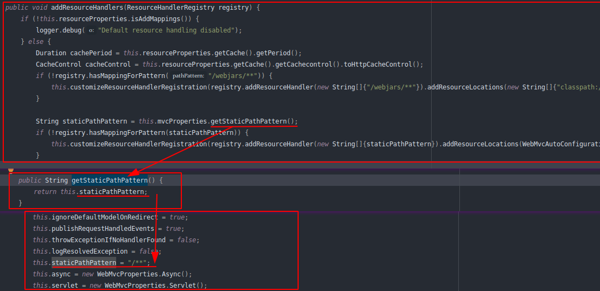
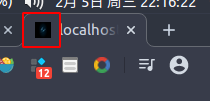

一、使用SpringBoot
１．创建SpringBoot应用，选中我们需要的模块；
２．SpringBoot已经默认将这些场景配置好了，只需要在配置文件中指定少量配置就可以运行起来；
３．接下里自己编写业务代码；
二、SpringBoot对静态资源的映射规则
//这个类可以用来设置和静态资源相关的参数
@ConfigurationProperties(
prefix = "spring.resources",
ignoreUnknownFields = false
)
public class ResourceProperties {...}//web开发的自动配置类
@Configuration(
proxyBeanMethods = false
)
@ConditionalOnWebApplication(
type = Type.SERVLET
)
@ConditionalOnClass({Servlet.class, DispatcherServlet.class, WebMvcConfigurer.class})
@ConditionalOnMissingBean({WebMvcConfigurationSupport.class})
@AutoConfigureOrder(-2147483638)
@AutoConfigureAfter({DispatcherServletAutoConfiguration.class, TaskExecutionAutoConfiguration.class, ValidationAutoConfiguration.class})
public class WebMvcAutoConfiguration {
......
public void addResourceHandlers(ResourceHandlerRegistry registry) {
if (!this.resourceProperties.isAddMappings()) {
logger.debug("Default resource handling disabled");
} else {
Duration cachePeriod = this.resourceProperties.getCache().getPeriod();
CacheControl cacheControl = this.resourceProperties.getCache().getCachecontrol().toHttpCacheControl();
if (!registry.hasMappingForPattern("/webjars/**")) {
this.customizeResourceHandlerRegistration(registry.addResourceHandler(new String[]{"/webjars/**"}).addResourceLocations(new String[]{"classpath:/META-INF/resources/webjars/"}).setCachePeriod(this.getSeconds(cachePeriod)).setCacheControl(cacheControl));
}
String staticPathPattern = this.mvcProperties.getStaticPathPattern();
if (!registry.hasMappingForPattern(staticPathPattern)) {
this.customizeResourceHandlerRegistration(registry.addResourceHandler(new String[]{staticPathPattern}).addResourceLocations(WebMvcAutoConfiguration.getResourceLocations(this.resourceProperties.getStaticLocations())).setCachePeriod(this.getSeconds(cachePeriod)).setCacheControl(cacheControl));
}
}
}
......
//配置欢迎页映射
@Bean
public WelcomePageHandlerMapping welcomePageHandlerMapping(ApplicationContext applicationContext, FormattingConversionService mvcConversionService, ResourceUrlProvider mvcResourceUrlProvider) {
WelcomePageHandlerMapping welcomePageHandlerMapping = new WelcomePageHandlerMapping(new TemplateAvailabilityProviders(applicationContext), applicationContext, this.getWelcomePage(), this.mvcProperties.getStaticPathPattern());
welcomePageHandlerMapping.setInterceptors(this.getInterceptors(mvcConversionService, mvcResourceUrlProvider));
return welcomePageHandlerMapping;
}
......
}1）、所有/webjars/**，都去classpath:/META-INF/resources/webjars/找资源；
webjars：以jar包的方式引入静态资源；(可以去https://www.webjars.org/找webjars资源)
引入对应的webjars的依赖就行
<dependency>
<groupId>org.webjars</groupId>
<artifactId>jquery</artifactId>
<version>3.4.1</version>
</dependency>２）、 /** 访问当前项目的任何资源

@ConfigurationProperties(
prefix = "spring.resources",
ignoreUnknownFields = false
)
public class ResourceProperties {
private static final String[] CLASSPATH_RESOURCE_LOCATIONS = new String[]{"classpath:/META-INF/resources/", "classpath:/resources/", "classpath:/static/", "classpath:/public/"};
private String[] staticLocations;
private boolean addMappings;
private final ResourceProperties.Chain chain;
private final ResourceProperties.Cache cache;
public ResourceProperties() {
this.staticLocations = CLASSPATH_RESOURCE_LOCATIONS;
this.addMappings = true;
this.chain = new ResourceProperties.Chain();
this.cache = new ResourceProperties.Cache();
}
......
}可以访问静态资源的文件夹位置：
"classpath:/META-INF/resources/",
"classpath:/resources/",
"classpath:/static/",
"classpath:/public/",
"/":当前项目下的根路径３）、欢迎页：静态资源文件夹下的所有index.html页面；被 /** 映射
例如:localhost:8080/ －－－－此时会去静态资源下去找index.html文件
4）、所有的**/favicon.ico 都是在静态资源文件夹下找；可以更改如图的图标，不更改就默认使用它的图标；

５）、如果想自己定义静态资源文件夹，就在application.properties/yml文件中配置(数组之间用逗号隔开)，会覆盖默认的静态资源访问配置，如下：
spring.resources.static-locations=classpath:/hello/,classpath:/team/glh/三、模板引擎
JSP、Velocity、Freemarker、Thymeleaf

SpringBoot推荐使用的是Thymeleaf：语法简单，功能强大
１．引入Thymeleaf
<!--切换Thymeleaf版本-->
<properties>
<thymeleaf.varsion>3.0.2.RELEASE</thymeleaf.varsion>
<!--布局功能的支持程序，thymeleaf３主程序对应layout２以上的-->
<thymeleaf-layout-dialect.varsion>2.1.1</thymeleaf-layout-dialect.varsion>
</properties>
......
<dependency>
<groupId>org.springframework.boot</groupId>
<artifactId>spring-boot-starter-thymeleaf</artifactId>
</dependency>
- Thymeleaf 使用及语法
@ConfigurationProperties(
prefix = "spring.thymeleaf"
)
public class ThymeleafProperties {
private static final Charset DEFAULT_ENCODING;
public static final String DEFAULT_PREFIX = "classpath:/templates/";
public static final String DEFAULT_SUFFIX = ".html";
private boolean checkTemplate = true;
private boolean checkTemplateLocation = true;
//只要我们把html页面放在"classpath:/templates/"下，thymeleaf就能自动渲染；
private String prefix = "classpath:/templates/";
private String suffix = ".html";
private String mode = "HTML";
private Charset encoding;
......
}只要我们把html页面放在”classpath:/templates/“下，thymeleaf就能自动渲染；
１）导入thmeleaf的语法空间（为了在代码键入的时候进行提示）
<html lang="en" xmlns:th="http://www.thymeleaf.org">２）使用thmeleaf语法（参照手册）
<!DOCTYPE html>
<html lang="en" xmlns:th="http://www.thymeleaf.org">
<head>
<meta charset="UTF-8">
<title>Title</title>
</head>
<body>
<p>成功</p>
<div th:text="${hello}">
</div>
</body>
</html>３）语法规则
th:任意html属性；来替换原生属性的值（10 Attribute Preceden）

表达式（4 Standard Expression Synt）？
Simple expressions:(表达式语法)
Variable Expressions: ${...} //获取变量值(OGNL表达式)
１）、获取对象属性、调用方法
/** Access to properties using the point (.).
*Equivalent to calling property getters.
*/
${person.father.name}
/** Access to properties can also be made by using brackets ([]) and writing
* the name of the property as a variable or between single quotes.
*/
${person['father']['name']}
/** If the object is a map, both dot and bracket syntax will be equivalent to
* executing a call on its get(...) method.
*/
${countriesByCode.ES}${personsByName['Stephen Zucchini'].age}
/** Indexed access to arrays or collections is also performed with brackets,
* writing the index without quotes.
*/
${personsArray[0].name}
/** Methods can be called, even with arguments.
*/
${person.createCompleteName()}${person.createCompleteNameWithSeparator('-'
２）、使用内置的基本对象：
#ctx : the context object.
#vars: the context variables.
#locale : the context locale.
#request : (only in Web Contexts) the HttpServletRequest object.
#response : (only in Web Contexts) the HttpServletResponse object.
#session : (only in Web Contexts) the HttpSession object.
#servletContext : (only in Web Contexts) the ServletContext objec
3）、内置一些工具对象
#execInfo : information about the template being processed.
#messages : methods for obtaining externalized messages inside variables expressions, in the same way as theywould be obtained using #{…} syntax.
#uris : methods for escaping parts of URLs/URIsPage 2
#conversions : methods for executing the configured conversion service (if any).
#dates : methods for java.util.Date objects: formatting, component extraction, etc.
#calendars : analogous to #dates , but for java.util.Calendar objects.
#numbers : methods for formatting numeric objects.
#strings : methods for String objects: contains, startsWith, prepending/appending, etc.
#objects : methods for objects in general.
#bools : methods for boolean evaluation.
#arrays : methods for arrays.
#lists : methods for lists.
#sets : methods for sets.
#maps : methods for maps.
#aggregates : methods for creating aggregates on arrays or collections.
#ids : methods for dealing with id attributes that might be repeated (for example, as a result of an iteration
Selection Variable Expressions: *{...} //选择表达式，和${...}功能大致相同，
补充：配合th:object="${session.user}"
例子对比：
<div th:object="${session.user}">
<p>Name: <span th:text="*{firstName}">Sebastian</span></p>
<p>Surname: <span th:text="*{lastName}">Pepper</span></p>
<p>Nationality: <span th:text="*{nationality}">Saturn</span></p>
</div>
---
<div>
<p>Name: <span th:text="${session.user.firstName}">Sebastian</span></p> <p>Surname: <span th:text="${session.user.lastName}">Pepper</span></p> <p>Nationality: <span th:text="${session.user.nationality}">Saturn</span>.</p>
</div>
Message Expressions: #{...} //获取国际化内容
Link URL Expressions: @{...} //定义url链接的
例子：
<!-- Will produce 'http://localhost:8080/gtvg/order/details?orderId=3' (plus rewriting) -->
<a href="details.html"th:href="@{http://localhost:8080/gtvg/order/details(orderId=${o.id})}">view</a>
<!-- Will produce '/gtvg/order/details?orderId=3' (plus rewriting) -->
<a href="details.html" th:href="@{/order/details(orderId=${o.id})}">view</a>
<!-- Will produce '/gtvg/order/3/details' (plus rewriting) -->
<a href="details.html" th:href="@{/order/{orderId}/details(orderId=${o.id})}">view</a>
Fragment Expressions: ~{...} //片段引用表达式
例子：
<div th:insert="~{commons :: main}"</div>
Literals(字面量)
Text literals: 'one text' , 'Another one!' ,…
Number literals: 0 , 34 , 3.0 , 12.3 ,…
Boolean literals: true , false
Null literal: null
Literal tokens: one , sometext , main ,…
Text operations（文本操作）:
String concatenation: +
Literal substitutions: |The name is ${name}|
Arithmetic operations（数学运算）:
Binary operators: + , - , * , / , %
Minus sign (unary operator): -
Boolean operations（不二运算）:
Binary operators: and , or
Boolean negation (unary operator): ! , not
Comparisons and equality（比较运算）:
Comparators: > , < , >= , <= ( gt , lt , ge , le )
Equality operators: == , != ( eq , ne )
Conditional operators（条件运算（支持三元运算符））:
If-then: (if) ? (then)
If-then-else: (if) ? (then) : (else)
Default: (value) ?: (defaultvalue)
Special tokens:
No-Operation: _### 四、SpringMVC自动配置
１．SpringBoot自动配置好了SpringMVC
以下是SpringBoot对SpringMVC的默认配置:
Inclusion of
ContentNegotiatingViewResolverandBeanNameViewResolverbeans.。自动配置了ViewResolver(视图解析器，根据方法的返回值得到视图对象（View），视图对象决定了如何渲染（转发？重定向？）)
。ContentNegotiatingViewResolver：组合所有的视图解析器；
public class ContentNegotiatingViewResolver extends WebApplicationObjectSupport implements ViewResolver, Ordered, InitializingBean {
......
@Nullable
public View resolveViewName(String viewName, Locale locale) throws Exception {
RequestAttributes attrs = RequestContextHolder.getRequestAttributes();
Assert.state(attrs instanceof ServletRequestAttributes, "No current ServletRequestAttributes");
List<MediaType> requestedMediaTypes = this.getMediaTypes(((ServletRequestAttributes)attrs).getRequest());
if (requestedMediaTypes != null) {
List<View> candidateViews = this.getCandidateViews(viewName, locale, requestedMediaTypes);
View bestView = this.getBestView(candidateViews, requestedMediaTypes, attrs);
if (bestView != null) {
return bestView;
}
}
String mediaTypeInfo = this.logger.isDebugEnabled() && requestedMediaTypes != null ? " given " + requestedMediaTypes.toString() : "";
if (this.useNotAcceptableStatusCode) {
if (this.logger.isDebugEnabled()) {
this.logger.debug("Using 406 NOT_ACCEPTABLE" + mediaTypeInfo);
}
return NOT_ACCEPTABLE_VIEW;
} else {
this.logger.debug("View remains unresolved" + mediaTypeInfo);
return null;
}
}
......
}。如何定制：我们可以自己给容器中添加一个视图解析器；自动将其组合起来；
//配置举例
@Bean
public ViewResolver myViewResolver(){
return new MyViewResolver();
}
private static class MyViewResolver implements ViewResolver{
@Override
public View resolveViewName(String s, Locale locale) throws Exception {
return null;
}
}Support for serving static resources, including support for WebJars (covered later in this document)).静态资源文件夹路径webjars；
Static
index.htmlsupport.静态首页访问Custom
Faviconsupport (covered later in this document). 页面图标Favicon.ico自动注册了
Converter,GenericConverter, andFormatterbeans.。
Converter转换器；public String hello(User user)：类型转换使用了Converter。
Formatter格式转换器；2020.2.4===Date；@Bean public FormattingConversionService mvcConversionService() { WebConversionService conversionService = new WebConversionService(this.mvcProperties.getDateFormat()); this.addFormatters(conversionService); return conversionService; }。自己添加的格式化器转换器，我们只需要放在容器中即可；
public void addFormatters(FormatterRegistry registry) { ApplicationConversionService.addBeans(registry, this.beanFactory); }Support for
HttpMessageConverters(covered later in this document).。
HttpMessageConverters:SpringMVC中用来转换http请求和响应的；User——json。
HttpMessageConverters是从容器中确定；从容器中获取所有的HttpMessageConverter；。我们可以自己给容器添加HttpMessageConverter，只需要将自己的组件注册到容器中（使用@Bean、@Component让自定义的扫描到即可）
Automatic registration of
MessageCodesResolver(covered later in this document).定义错误代码生成规则Automatic use of a
ConfigurableWebBindingInitializerbean (covered later in this document).我们可以配置一个ConfigurableWebBindingInitializer来替换默认的，（添加到容器中）
If you want to keep those Spring Boot MVC customizations and make more MVC customizations (interceptors, formatters, view controllers, and other features), you can add your own @Configuration class of type WebMvcConfigurer but without @EnableWebMvc.
If you want to provide custom instances of RequestMappingHandlerMapping, RequestMappingHandlerAdapter, or ExceptionHandlerExceptionResolver, and still keep the Spring Boot MVC customizations, you can declare a bean of type WebMvcRegistrations and use it to provide custom instances of those components.
If you want to take complete control of Spring MVC, you can add your own @Configuration annotated with @EnableWebMvc, or alternatively add your own @Configuration-annotated DelegatingWebMvcConfiguration as described in the Javadoc of @EnableWebMvc.
２．扩展SpringMVC
<mvc:view-controller path="/hello" view-name="success"/>
<mvc:interceptors>
<mvc:interceptor>
<mvc:mapping path="/hello"/>
<bean></bean>
</mvc:interceptor>
</mvc:interceptors>编写一个配置类（用@Configuration标注），是WebMvcConfigureAdapter类型，不能用＠EnableWebMvc标注
//使用WebMvcConfigurationSupport进行扩展SpringMVC的功能
//配置了@EnableWebMvc，会全面接管SpringMVC
//@EnableWebMvc
//@Configuration
//public class MyMvcConfig extends WebMvcConfigurationSupport {
// @Override
// protected void addViewControllers(ViewControllerRegistry registry) {
//// super.addViewControllers(registry);
// //解释：浏览器发送/hello请求，来到success页面
// registry.addViewController("/hello2").setViewName("success");
// }
//}
//Spring 5.0后要使用Java8，而在Java8中接口是可以有default方法的，所以这个类就没必要了。
// 所以我们只需要在自定义配置类中直接实现 WebMvcConfigurer 接口就好了
//实现WebMvcConfigurer接口，即使配置了@EnableWebMvc，也不会全面接管SpringMVC
@Configuration
public class MyMvcConfig implements WebMvcConfigurer {
@Override
public void addViewControllers(ViewControllerRegistry registry) {
//解释：浏览器发送/hello请求，来到success页面
registry.addViewController("/hello3").setViewName("success");
}
}原理：
１）、WebMvcAutoConfiguration是SpringMVC的自动配置类；
２）、在做其他自动配置类时会导入@Import({WebMvcAutoConfiguration.EnableWebMvcConfiguration.class})
@Configuration(
proxyBeanMethods = false
)
public static class EnableWebMvcConfiguration extends DelegatingWebMvcConfiguration implements ResourceLoaderAware {
......} @Configuration(
proxyBeanMethods = false
)
public class DelegatingWebMvcConfiguration extends WebMvcConfigurationSupport {
......
//从容器中获取所有的WebMvcConfigurer
@Autowired(
required = false
)
public void setConfigurers(List<WebMvcConfigurer> configurers) {
if (!CollectionUtils.isEmpty(configurers)) {
//一个参考实现，将所有的WebMvcConfigurer相关的配置都来一起调用；
this.configurers.addWebMvcConfigurers(configurers);
}
}
......
}３）、最终容器中所有的WebMvcConfigurer都会一起起作用，我们的配置类也会被调用；
３．全面接管SpringMVC(不推荐)
SpringBoot对SpringMVC的自动配置不需要了，所有的都是我们自己配；所有的SpringMVC的自动配置都会失效，
我们需要在配置类中添加@EnableWebMvc即可；
If you want to take complete control of Spring MVC, you can add your own @Configuration annotated with @EnableWebMvc, or alternatively add your own @Configuration-annotated DelegatingWebMvcConfiguration as described in the Javadoc of @EnableWebMvc.
原理：
１）、＠EnableWebMvc的核心
@Import({DelegatingWebMvcConfiguration.class})
public @interface EnableWebMvc {
}２）、
@Configuration(
proxyBeanMethods = false
)
public class DelegatingWebMvcConfiguration extends WebMvcConfigurationSupport {
......
}３）、
@Configuration(
proxyBeanMethods = false
)
@ConditionalOnWebApplication(
type = Type.SERVLET
)
@ConditionalOnClass({Servlet.class, DispatcherServlet.class, WebMvcConfigurer.class})
//容器中没有这个组件的时候，这个自动配置类才生效
@ConditionalOnMissingBean({WebMvcConfigurationSupport.class})
@AutoConfigureOrder(-2147483638)
@AutoConfigureAfter({DispatcherServletAutoConfiguration.class, TaskExecutionAutoConfiguration.class, ValidationAutoConfiguration.class})
public class WebMvcAutoConfiguration {
......
}４）、@EnableWebMvc将WebMvcConfigurationSupport组件导入进来，导入的WebMvcConfigurationSupport只是SpringMVC最基本的功能；
五、修改SpringBoot的默认配置
模式：
１）、SpringBoot在自动配置很多组件的时候，先看容器中有没有用户自己配置的(@Bean、@Component)，如果有就用用户配置的，如果没有，才自动配置；如果有些组件可以有多个（例如：ViewResolver），将用户配置的和自己默认的组合起来；
２）、在SpringBoot中会有非常多的xxxConfigurer帮助我们进行扩展配置；
六、实际开发
1、RestfulCRUD:CRUD满足Rest风格；
uri:/资源名称/资源标识 http请求方式区分对资源CRUD操作
| 普通CRUD（uri未做区分） | RestfulCRUD | |
|---|---|---|
| 查询 | getEmp | emp—GET |
| 添加 | addEmp?xxx | emp—POST |
| 修改 | updateEmp?id=xx&xxx=xxx | emp/{id}—PUT |
| 删除 | deleteEmp?id=1 | emp/{id}—DELETE |
RestfulCRUD请求架构风格举例：
| 请求uri | 请求方式 | |
|---|---|---|
| 查询所有员工 | emps | GET |
| 查询某个员工（来到修改页面） | emp/{id} | GET |
| 来到添加页面 | emp | GET |
| 添加员工 | emp | POST |
| 来到修改页面（查出员工信息进行回显） | emp/{id} | GET |
| 修改员工 | emp | PUT |
| 删除员工 | emp/{id} | DELETE |
２、thmeleaf公共页面元素的抽取
1).抽取公共片段
<div th:fragment="copy">
© 2011 The Good Thymes Virtual Grocery
</div>
2).引入公共片段
<div th:insert="~{footer :: copy}">
</div>
~{templatename::selector}//模板名：：选择器
~{templatename::fragmentname}//模板名：：片段名
//模板名会使用thmeleaf的前后缀配置规则进行解析(也就是上一个页面的名字，同一级目录下直接写名字，不然就要带上文件夹名字)
3).效果
insert的功能片段在div标签中
注意：如果使用th:insert等属性进行引入，可以不用~{};
行内写法可以加上:[[~{}]];[(~{})]三种引入公共片段的方式：
th:insert is the simplest: it will simply insert the specified fragment as the body of its host tag.将公共片段整个插入到声明引入的元素当中；
th:replace actually replaces its host tag with the specified fragment.将声明引入的元素替换为公共片段；
th:include is similar to th:insert , but instead of inserting the fragment it only inserts the contents of this fragment.将被引入的片段的内容包含进这个标签中；
举例：
1).抽取公共片段
<footer th:fragment="copy">
© 2011 The Good Thymes Virtual Grocery
</footer>
2).引入公共片段
<div th:insert="footer :: copy">
</div>
<div th:replace="footer :: copy">
</div>
<div th:include="footer :: copy">
</div>
3).效果
<div>
<footer>© 2011 The Good Thymes Virtual Grocery</footer>
</div>
<footer>© 2011 The Good Thymes Virtual Grocery</footer>
<div>© 2011 The Good Thymes Virtual Grocery</div>３、引入片段的时候传入参数
<div th:replace="::frag (onevar=${value1},twovar=${value2})">...</div>４、举例